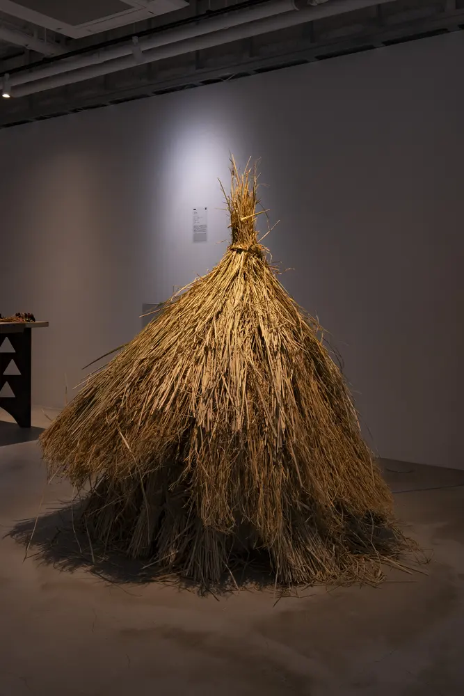
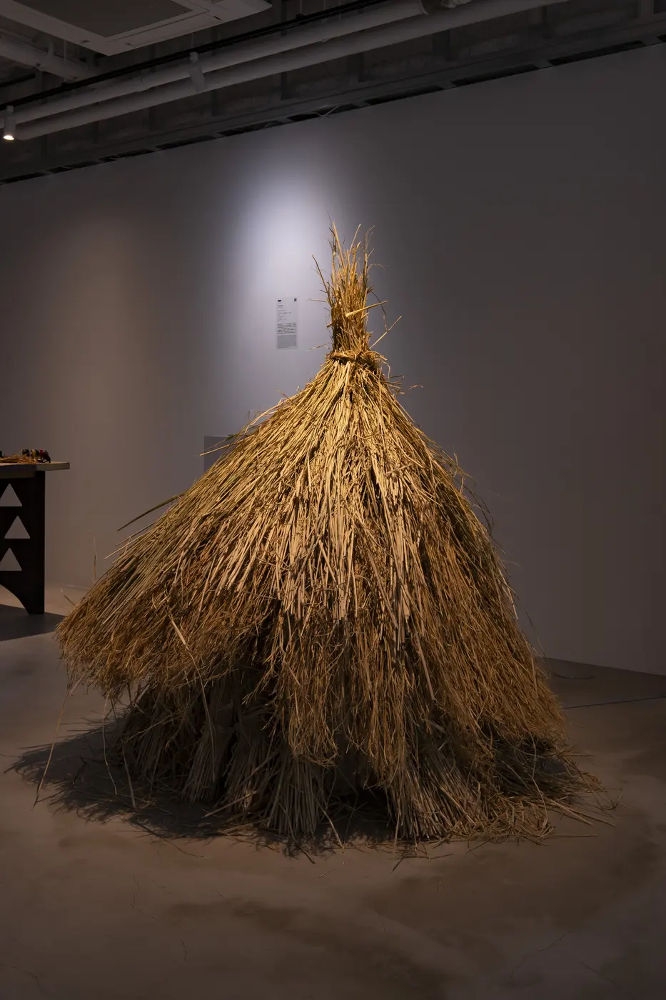

カタメニョウ
稲作の周辺で集めた素材の硬さと量感を、そのまま身体のような輪郭へした立体の試作です。

- Year
- 2024年
- Place
- 小院瀬見
- Materials / Method
- 藁、自然素材
What I tried
細い素材を束ねることで大きな塊へ変え、壁から自立するほどの密度と、先端がほどける柔らかさを同居させました。「カタメニョウ」という名も、用途や既存の分類から形を見る前に、この個体の佇まいを受け取るためにつけています。

稲作の周辺で集めた素材の硬さと量感を、そのまま身体のような輪郭へした立体の試作です。

細い素材を束ねることで大きな塊へ変え、壁から自立するほどの密度と、先端がほどける柔らかさを同居させました。「カタメニョウ」という名も、用途や既存の分類から形を見る前に、この個体の佇まいを受け取るためにつけています。
